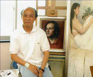

 |
|||
|
中国当代著名油画家。1945年出生，上海人，祖籍浙江侗市崇福镇。1978年考入中国美术学院（原浙江美术学院）油画系研究生班（文革后第一届艺术类研究生），师从王德威与全山石教授。1980年毕业后留油画系任教。油画《开拓幸福路》参加“中国第二届青年美术作品展”，并获银奖。1984年由国家文化部与中国美术学院选派赴法国巴黎国家高等美术学院深造。入皮埃尔.伽洪教授（Prof.Pierre CARRON）工作室研习现代具象油画。1991年11月至1993年1月，以访问学者的身份赴法国，在巴黎国家装饰艺术学院进行学术交流。1998年-2008年?调离中国美术学院，执教于上海师范大学美术学院。任上海师范大学美术学院教授、院长至今。曾在法、美、英、比等国及港澳地区与国内举办个人画展和联展，部分作品被博物馆和收藏家收藏。 |